Bridging the gap between automated processes and roster planners
Timeline
2 months
Collaborators
1 Engineer
1 Product Manager
1 Design Manager
Constraints
Scarce engineering bandwidth
User testing opportunities
My Role
Leading research and design on various design features towards an MVP product
As the sole designer onboard, I owned the design of the product – working closely with a Product Manager, an engineer, and with support from my manager. My team was also working in this product at a part time capacity, which affected product decisions and directions.
Context
Roster
A roster is a schedule or list that outlines the assignment of tasks, shifts, or responsibilities for a group of people.
Roster Planner
A person that uses tools/systems to manage and organize employee schedules/rosters.
Roster monster helps roster planners in the public sector create a first draft of a roster more efficiently. The algorithm takes into consideration a set of rules, scheduled shifts and staff requests, which roster planners set-up manually.
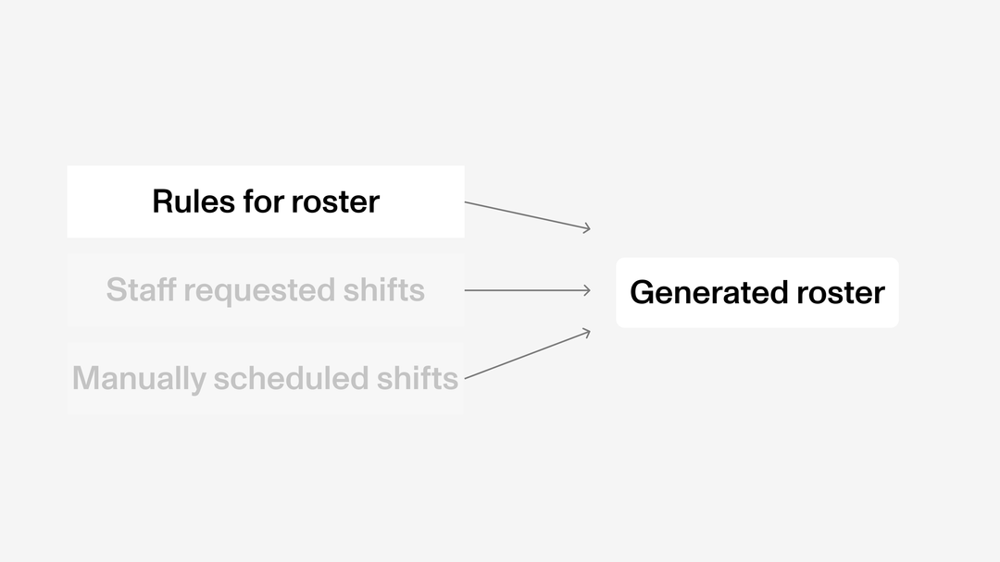Why such a product/solution?
In public sectors such as healthcare, roster planning can be highly complex, time consuming, and mentally draining. Enterprise software and solutions are costly, and not flexible enough for roster planning. To further justify these as a designer on the product:
Business goals
Save time and business costs on enterprise softwares, allowing roster planners to focus on more / other important work.
Design goals
Reduce the human errors from manual rostering whilst giving enough clarity to the automated processes.
Higher Level Problem
Roster planners don't have visibility and insight to the fairness of the roster, generated by the machine.
When a normally manual process is automated, roster planners lose the insight to easily identifiable information for the tradeoffs are made.
This led to manual, time consuming workarounds when evaluating if a generated roster is good and fair enough for the staff rostered.
The automation process leaves the roster planner completely out of the loop when creating a roster.
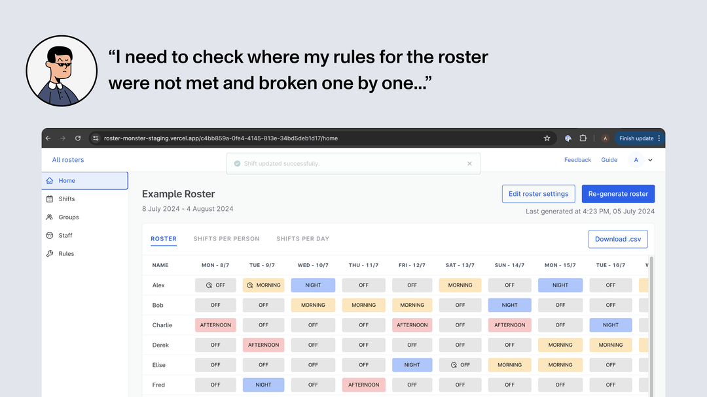The Design Solution
A generated roster summary view of rule violations
Roster planners can now look, identify, and assess the severity of roster planner defined rules (constraints) that have not been met in the generated roster.
Animated loading state for E2E workflow
In addition to the summary view, I added transparency to the generation time, time estimate, and a simple loading animation, exported as a Lottie file.
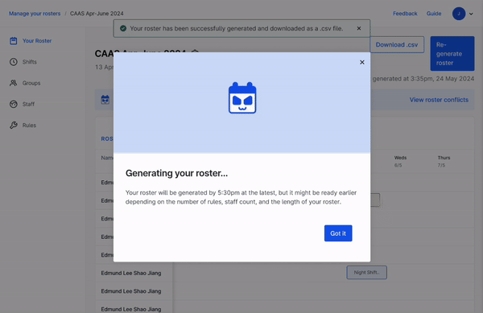Impact of Design Solution
Impact on time and effort for roster planners
As the product is still in it's early MVP development, we weren't able to get qualitative metrics. We were still able to hear how roster planners have been using the product:
From a power user –
"1 week's worth of time can be reduced to 5 hours – 2 hours for inputting on Roster Monster, 3 hours on my spreadsheet."
– Roster planner from Emergency Medicine Department, Singapore General HospitalResearch -> Problem Framing
How might roster planners evaluate if a roster is 'good enough' through rules?
Roster planners need 3 types of rule information to evaluate the generated roster
One of the insights we discovered was what about information about rules was important to see.
Example use case:
If roster isn't able to fulfill a '20 staff per day' rule, a roster planner would need to know where (i.e. Monday) and degree (i.e. only 18 staff were rostered).
I led semi structured interviews to further understand this process with various government stakeholders.
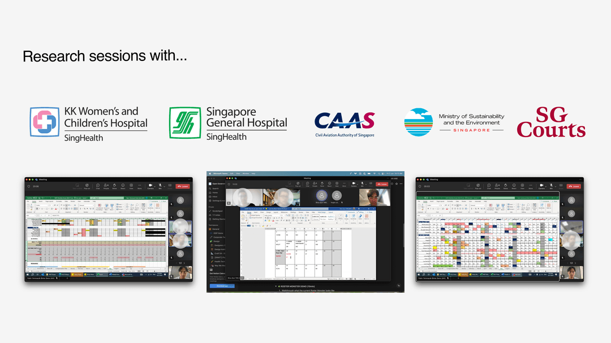Design Exploration – Concept Testing
Various concepts that leveraged on both familiar and different workflows to evaluate a 'good enough' roster.
I explored 3 different concepts and high level scenarios without getting too deep into the UI.
Visual, hover interaction
What if you could see the rule violation directly on the roster?
Hover interaction
What if you could see the rule violation directly on the quota statistics page?
Drawer modal
What if there was a summary of rule violations?
Finding an 'MVP' conceot to work on first
Roster planners liked the summary view the most, but it was also important to see the roster in view.
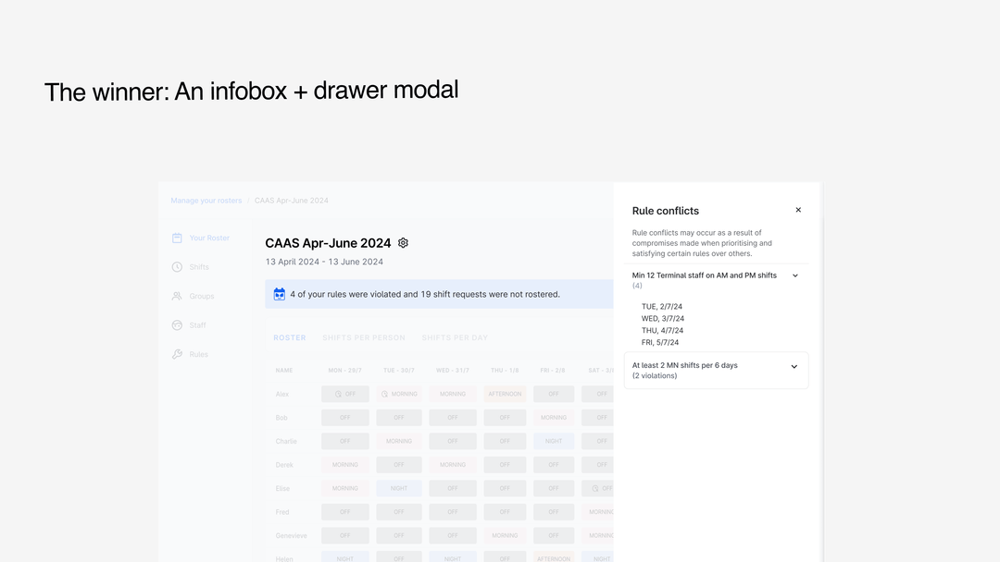FUTURE SCOPING, PRODUCT ROADMAPPING
Will building this feature amongst others move the needle?
As I was the only full time designer onboard, I needed to justify with my engineer that the feature was worth pushing out after the research and deign I would be undergoing.
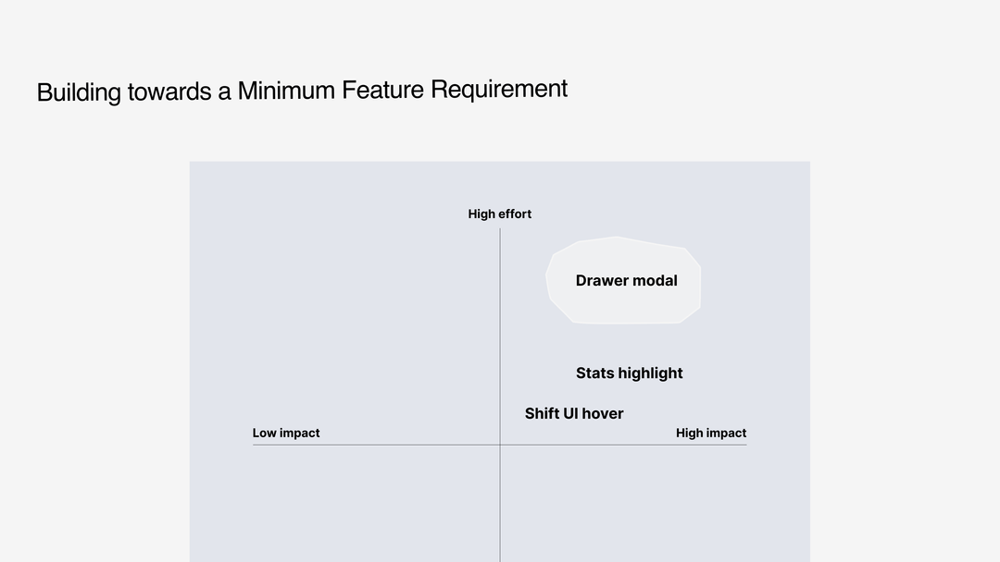Hearing the user challenges through interviews and our feedback loop helped me justify the decision (with good confidence) to push for a high impact, high effort feature.
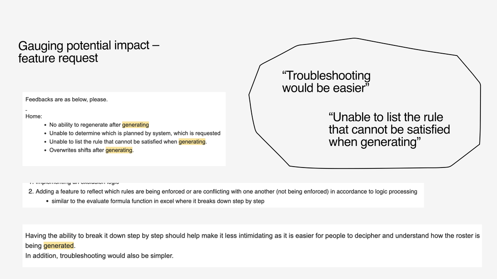DESIGN DETAIL CONSIDERATIONS
Focusing on the most important, relevant rule violation information
From interviews and shadowing, they generally look out for information in this order. For example, if a roster isn’t able to fulfill a ‘20 staff per day’ rule, a roster planner would need to know where (i.e. Monday) and degree (i.e. only 18 staff were rostered).
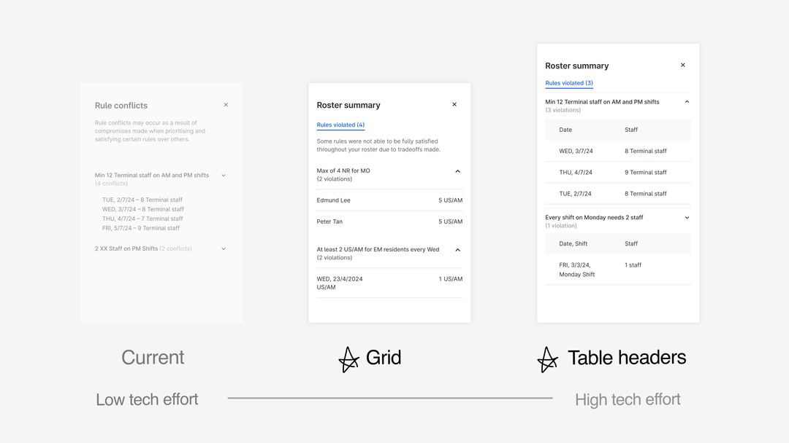Some keys insights from the usability tests:
No table headers looks, feels cleaner
Table header information was not relevant and took up unnecessary space to roster planners.
Accordion helps with showing relevant info
Accordion worked well as intended, allowing focus on specific rule violations.
Info hierarchy can be a bit tough to navigate
Grids helped, already quite a lot of text to process. Hierarchy was not as clear.
Being intentional with whitespace and visual clutter
I focused a lot on using the right type size, colors, and even spacing to create an information hierarchy akin to how roster planners would need to see the information.

INTERACTION DESIGN CONSIDERATIONS
Maximising the view for roster planners
During a testing session, I noted that a roster planner would ideally like to see both the roster and the drawer summary for reference. This meant hiding irrelevant information, such as hiding sidebar by default.
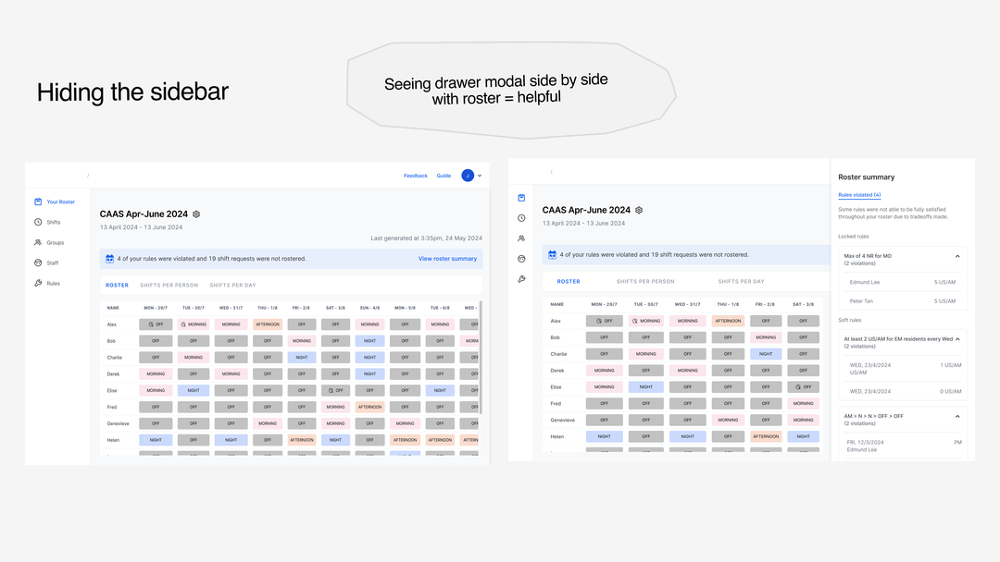HIGHER LEVEL DESIGN FLOW, EDGE CASES
Bringing clarity to the backend roster generation process
Generating a roster can take up to 5 minutes, conveyed through the spinning circle of death. I spared an hour to quickly create a pop-up modal with a simple animation using After Effects and additional copywriting, which my engineer could easily implement in minutes.
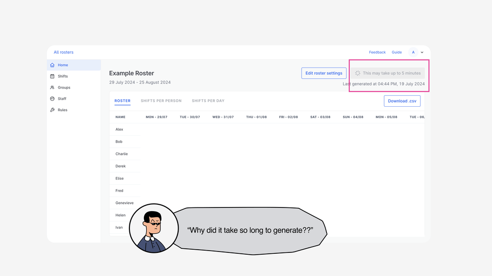 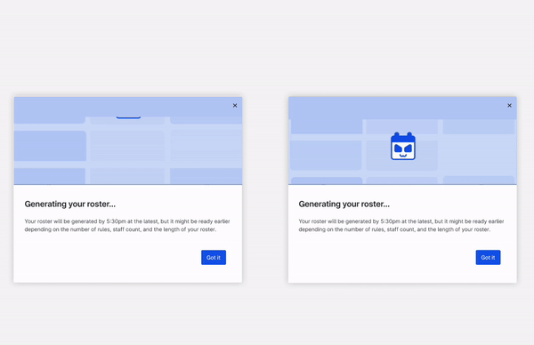Thoughts, Reflection
Catering to everyone meant catering to no one
During the initial part of my internship, we faced a lot of issues during testing and research of people not understanding our product. Upon reflection, this taught me to being judicious about what and who to prioritise for. In this case, we decided to focus on tech savvy roster planners for the time being.
Conducting group design critiques when it's hard to hear directly from users
Often times hearing from the user is ideal, but I don't always have access to them especially with a small user base. I learnt how to prepare and present my work amongst designers which gave me invaluable feedback on explorations, design details, and other considerations. This taught me to organise types of feedback given and build confidence to share designs in various types of fidelity.